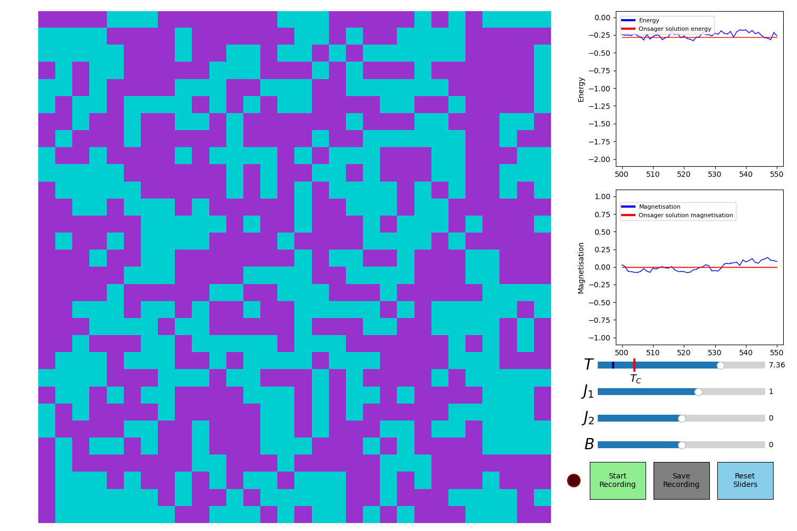
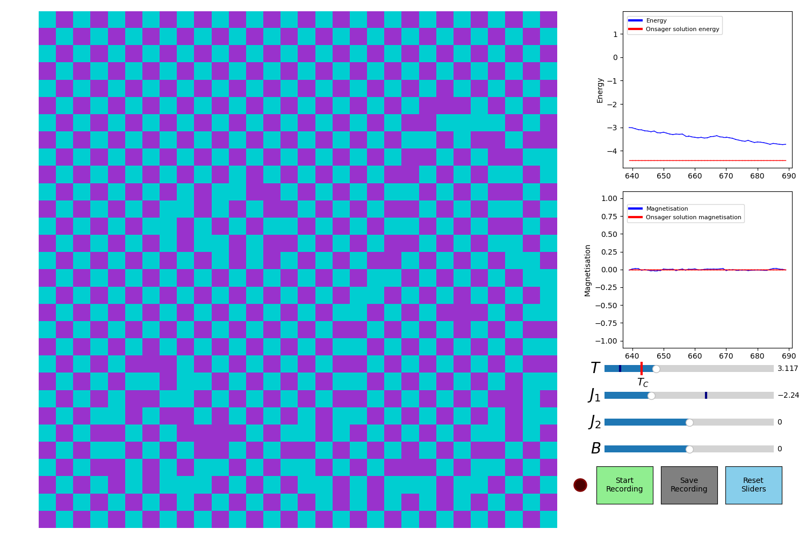
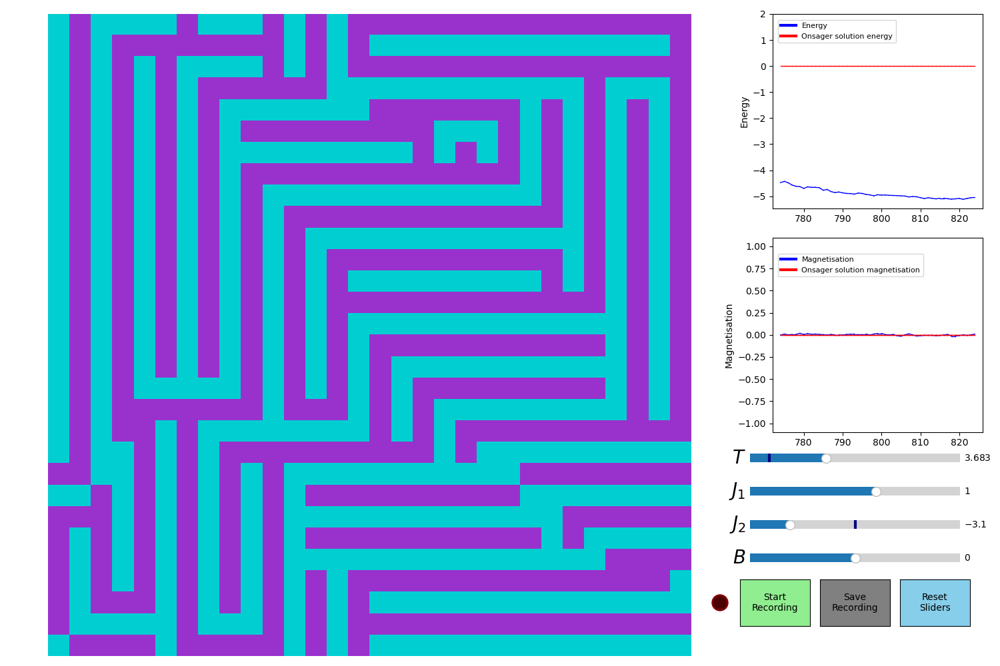

2D Ising Model Visualisation
This project is a interactive real-time visualisation of the 2D square Ising model, a fundamental model for ferromagnetism in statistical mechanics that can be used to study phase transitions and critical phenomena.
The model can demonstrate how interactions between spins lead to collective behaviour, such as the sponteneous magnetisation that occurs below the critical temperature. The visualisation also allows you to see the
formation and change of magnetic domains as the dynamics of the system evolve. Anti-ferromagneting interactions can also be visualised for certain parameter choices, which leads to the formation of checkerboard patterns of spins.
This project was implemented in python using the Metropolis algorithm to simulate the time-dyanimcs of the system, visualised through matplotlib's animation module.
Code
TimEdmondsPhysics / 2D-Ising-Model
Metropolis algorithm simulation of the 2D square Ising model, visualised with matplotlib.
Gallery



